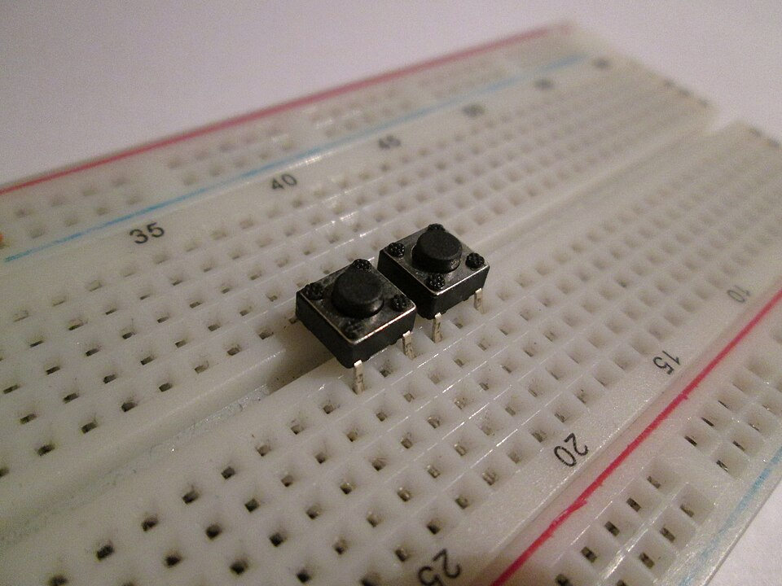
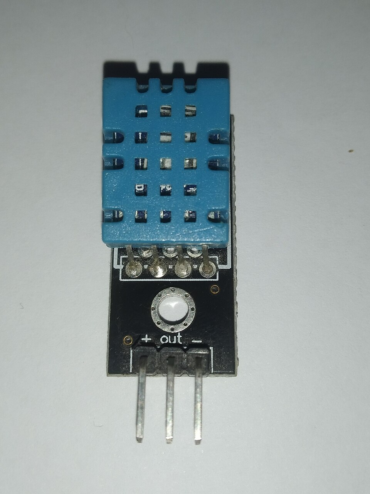
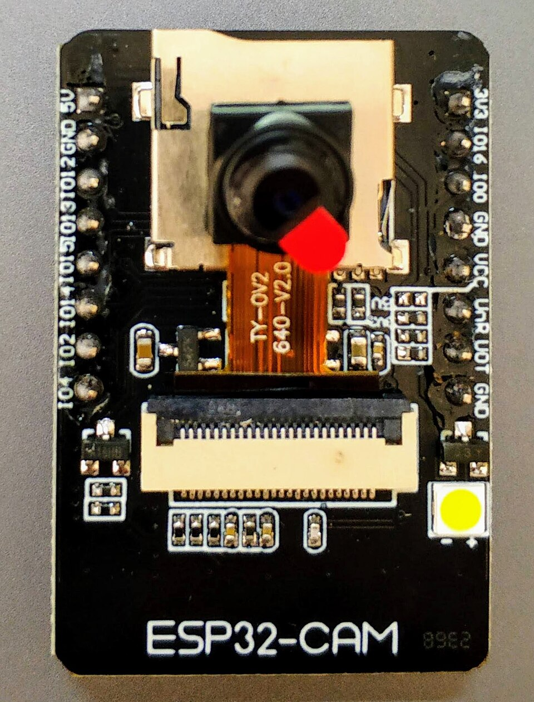
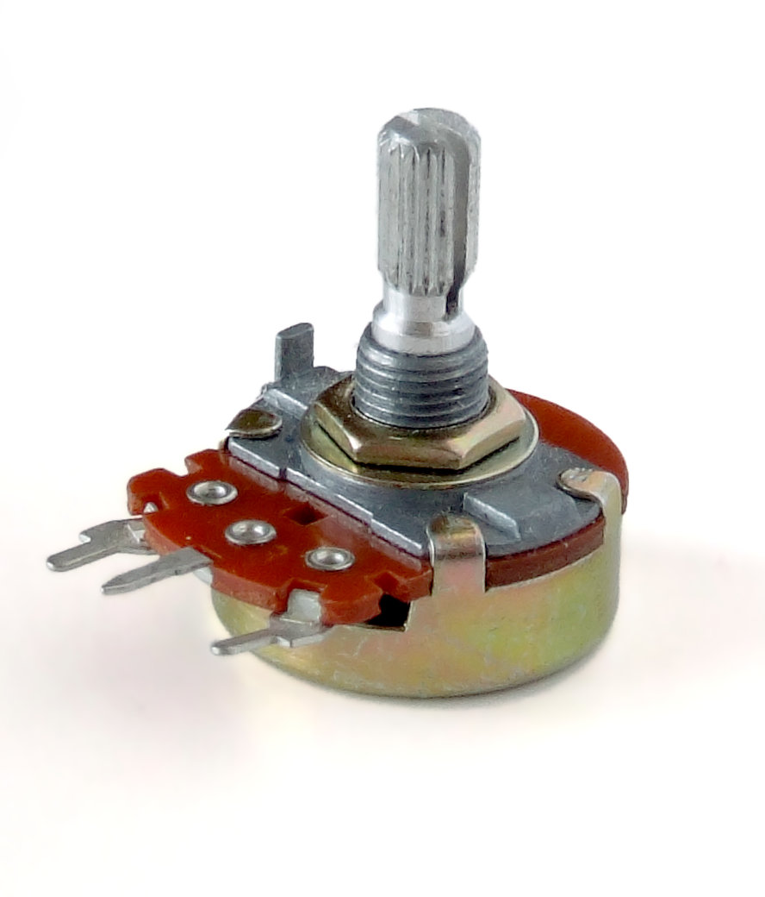
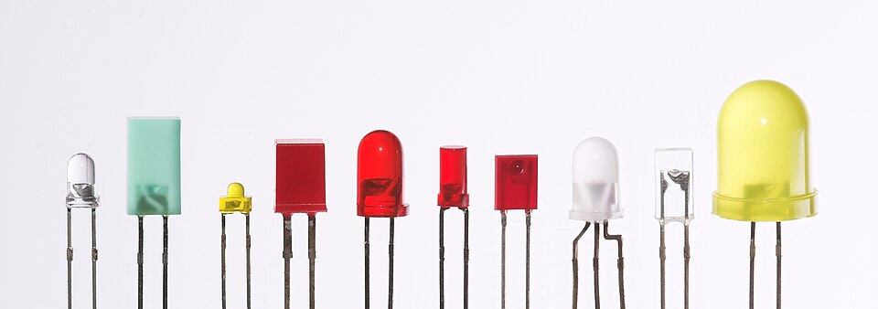
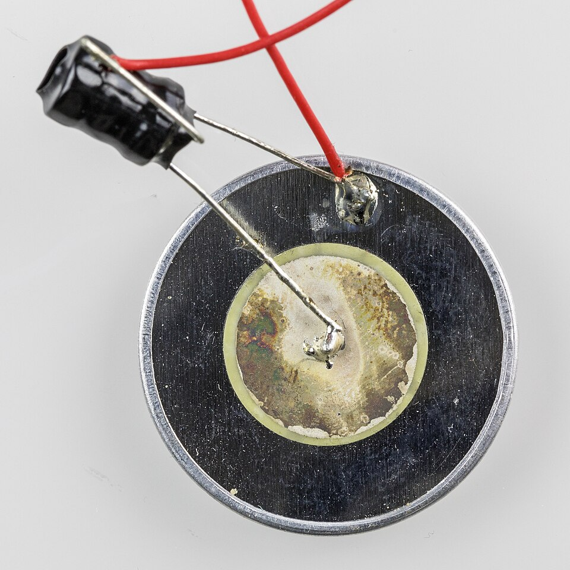
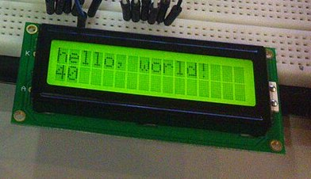

Hasta ahora tu Arduino solo sabía hacer cosas. Hoy le damos sentidos… ¡y le enseñamos a decidir!
¿Te acuerdas de la sesión 1?
Sentir → Pensar → Actuar 🔁
👀 Sentir
Los sensores le cuentan al cerebrito lo que pasa afuera.
🧠 Pensar
Tu programa decide qué hacer con esa información.
💪 Actuar
Los actuadores cambian algo del mundo real.
En las sesiones anteriores solo usamos la tercera parte: prender un LED. Hoy completamos el círculo. 🎯
Los sentidos del cerebrito
Sensores 👀
Un sensor mide algo del mundo —un toque, una distancia, el calor— y lo convierte en electricidad que el Arduino sabe leer. Muchos se parecen a tus sentidos… aunque otros sienten cosas que tú no puedes:

Botón · siente tu dedo
👆 como tu pielKszapsza · CC BY-SA 4.0Ultrasonido · el oído de murciélago
👂 como tu orejaSparkFun · CC BY 2.0

Temperatura · siente el calor
🖐️ como tu manoEdwiyanto · CC BY-SA 4.0

Cámara · mira de verdad
👁️ como tu ojoNowforever · CC BY-SA 4.0

Potenciómetro · sabe cuánto lo giraste
🤷 tú no tienes nada asíIainf · CC BY 2.5
Un sensor no decide nada: solo avisa. Es el programa el que decide qué hacer.
Los músculos del cerebrito
Actuadores 💪
Un actuador hace el camino contrario: recibe electricidad del Arduino y la convierte en algo que pasa en el mundo —luz, sonido, movimiento, palabras—. Se parecen a las cosas que tu cuerpo sabe hacer:

LED · hace luz
😁 como tu sonrisa: avisa sin hablarAfrank99 · CC BY-SA 2.0

Buzzer · hace sonido
🗣️ como tu vozR. Spekking · CC BY-SA 4.0Servo · hace movimiento
💪 como tu brazoS. Dwivedi · CC BY-SA 4.0

Pantalla · escribe mensajes
💬 como tus palabrasDesignermadsen · CC BY-SA 4.0
Los conocerás uno por uno en las próximas sesiones. ¡Hoy empezamos por el más simple de todos! 🔘
Duelo de cerebritos
¿Sensor o actuador? 🎮
👁️Cargando…
Toca el botón que corresponda.
Puntaje: 0 · Van 1 de 8
Tu primer sensor
El botón por dentro 🔘
El interruptor de la sesión 3 tiene dos posiciones: prende o corta la energía de todo el circuito.
El pulsador se cierra solo mientras lo aprietas y vuelve solo: por eso el Arduino lo lee como sensor.
Una palabra nueva
Entradas y salidas ↔️
→ OUTPUT (salida)
El pin manda electricidad hacia afuera. Así prendimos el LED.
pinMode(13, OUTPUT);
← INPUT (entrada)
El pin escucha: se queda esperando a ver si le llega electricidad.
pinMode(2, INPUT);
Un mismo pin puede ser boca o oreja: se lo decimos una vez en el setup y listo.
¡Manos a la obra!
El circuito del botón 🔧
¿Y para qué la resistencia de 10 kΩ? No es el casco del LED: esta tiene otro trabajo.
Enseñarle a decidir
El if: si pasa esto… haz esto otro 🤔
boton.ino | Arduino IDE 2
1voidsetup() {
2pinMode(2, INPUT);
3pinMode(13, OUTPUT);
4}
5
6voidloop() {
7if (digitalRead(2) == HIGH) {
8digitalWrite(13, HIGH);
9 } else {
10digitalWrite(13, LOW);
11 }
12}
⭐ Proyecto de la sesión
Tu propio interruptor de luz 💡
Ya tienes todo: un sensor que avisa, un programa que decide y un actuador que obedece.
Armar el circuito del botón y el del LED en la misma protoboard
Subir el programa del if y probarlo
Cambiar el HIGH por LOW en el if: ¿qué pasa ahora?
Hacer que el botón encienda tres LEDs de una vez
Truco de profe: si el LED parpadea solo cuando pasas la mano cerca, seguramente falta la resistencia de 10 kΩ. 👻
⭐ Reto de la sesión
La luz que se queda encendida 🔒
Nuestro interruptor solo alumbra mientras aprietas. Los de tu casa no son así: aprietas una vez y la luz se queda.
Pista: el Arduino necesita acordarse de si la luz estaba prendida o apagada. Una variable es justamente una cajita para acordarse de cosas. 🧠
Este reto es difícil: si lo logras, ya estás programando como grande. 💪
Duelo de cerebritos
¿Cuánto aprendiste? Toca para voltear
¿Qué hace un sensor?
Avisarle al cerebrito lo que pasa afuera 👀
¿Y un actuador?
Cambiar algo del mundo real: luz, sonido, movimiento 💪
¿Qué le dice pinMode(2, INPUT) al Arduino?
Que ese pin va a escuchar, no a mandar 👂
¿Cuántas patitas del botón están siempre unidas?
De a dos: 1 con 2, y 3 con 4 🔘
¿Qué hace el else?
Lo que se hace cuando la pregunta del if es «no» 🙅
Lo lograste
¡Tu Arduino ya siente! 🎉
Hoy cerraste el círculo completo: sentir, pensar y actuar. Tu programa toma decisiones solito.
Próxima sesión 🎵
Le vamos a dar voz: el buzzer, las notas musicales… ¡y tu primera canción programada!